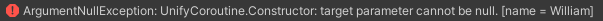

Creating and Starting a Unify Coroutine
Creating a Unify Coroutine instance
To create a Unify Coroutine instance, use the new() operator and pass the Coroutine method to the constructor:
UnifyCoroutine myUnifyCoroutine = new UnifyCoroutine(SayHello());
IEnumerator SayHello()
{
print("Hello, Unify!");
yield return null;
}
Starting a Unify Coroutine instance
To start a Unify Coroutine, call the Start() method on the newly created instance. The Start() method will return true if the Unify Coroutine was started successfully, otherwise it will return false.
bool started = myUnifyCoroutine.Start();
Delayed Start
A Unify Coroutine has a startDelay property to allow delaying execution from when the Start() method is called.
The startDelay property can be set in two ways:
Set the startDelay property directly:
myUnifyCoroutine.startDelay = 2.5f; // 2.5 seconds
Pass startDelay as a parameter to the constructor:
myUnifyCoroutine = new UnifyCoroutine(PrintEverySecond(), startDelay:2.5f); // 2.5 seconds
Starting a Unify Coroutine without creating an instance
Unify Coroutines provide a static Start() method that enables the starting of a Unify Coroutine without needing to create an instance.
Static Unify Coroutines still offer delayed start and looping functionality via the startDelay, loopCount and passDelay properties, values for which can be passed into the method as parameters.
The static Start() method also offers subscription to the Finished event through the finishedEventHandler parameter.
The Start() method will return true if the Unify Coroutine was started successfully, otherwise it will return false.
bool started = UnifyCoroutine.Start(SayHello(), startDelay: 1f, repeatCount: 2, passDelay: 1f,
finishedEventHandler: (s, e) =>
{
print("* Static Unify Coroutine FINISHED *");
} );
IEnumerator SayHello()
{
print("Hello, Unify!");
yield return null;
}
Example One
This example uses a UnifyCoroutine instance. The Unify Coroutine waits for 2.5 seconds, then starts to count from 1 to 10 while printing the current value to the Unity Console every second.
Here, failSilently has been set to false to allow you to trigger exceptions as described below. The name property has been set to 'Bob' to demonstrate how Unify Coroutines are identified in exception messages.
Attach the script below to a GameObject and press:
- S to Start the Unify Coroutine
using System.Collections;
using Unify.Coroutines;
using UnityEngine;
public class CreatingAndStarting : MonoBehaviour
{
private UnifyCoroutine myUnifyCoroutine;
void Start()
{
myUnifyCoroutine = new UnifyCoroutine(PrintEverySecond(), startDelay:2.5f) { name = "Bob" };
print("press S to START");
}
void Update()
{
if (Input.GetKeyUp(KeyCode.S))
{
myUnifyCoroutine.Start();
}
}
IEnumerator PrintEverySecond()
{
for (int i = 1; i <= 10; i++)
{
print("i = " + i);
yield return new WaitForSecondsRealtime(1f);
}
}
}
Example Two
This example is the same as Example One, but uses the static Start() method to begin execution of the Unify Coroutine.
Attach the script below to a GameObject and press:
- S to Start the Unify Coroutine
using System.Collections;
using Unify.Coroutines;
using UnityEngine;
public class StaticStart : MonoBehaviour
{
void Start()
{
print("press S to START");
}
void Update()
{
if (Input.GetKeyUp(KeyCode.S))
{
print("* Starting Unify Coroutine *");
UnifyCoroutine.Start(PrintEverySecond(), startDelay: 2.5f,
finishedEventHandler: (s, e) =>
{
print("* Static Unify Coroutine FINISHED *");
});
}
}
IEnumerator PrintEverySecond()
{
for (int i = 1; i <= 10; i++)
{
print("i = " + i);
yield return new WaitForSecondsRealtime(1f);
}
}
}
Exceptions
Exceptions will always be thrown under the following circumstances:
- Setting the startDelay property to a value of less than 0
- Passing the target parameter as null
Exceptions will be thrown under the following circumstances, only if failSilently is false:
- Starting a Unify Coroutine that is in a Running state
- Starting a Unify Coroutine that is in a Paused state
- Starting a Unify Coroutine that is in a Cancelled state
Unify will provide information in the exception message to help you find the cause of the error, for example:
This message tells us the exception was caused by calling the Start() method on a Unify Coroutine that was already Running, and that 'Bob' was the name of the offending Unify Coroutine instance.

This message tells us the target parameter was null when calling the static Start() method.